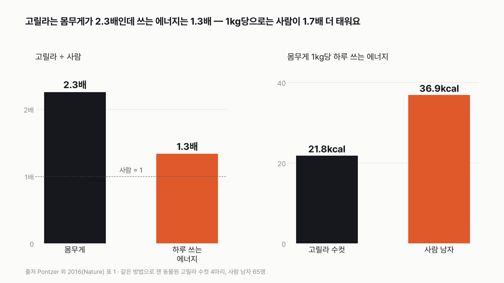
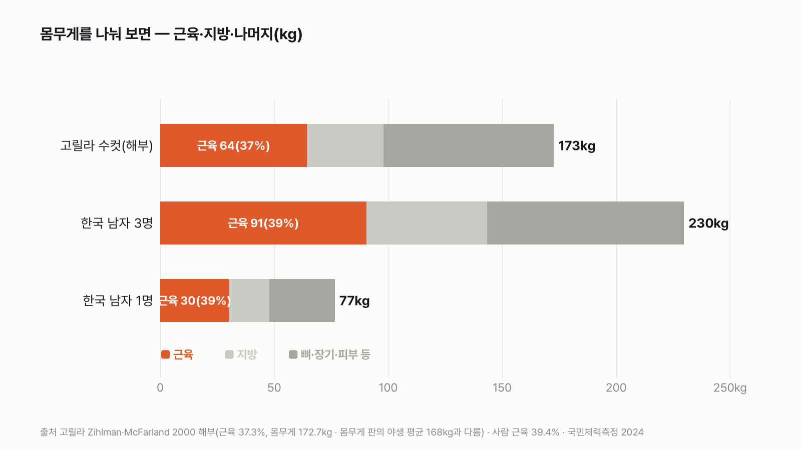
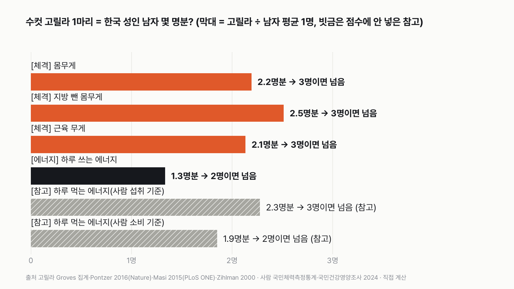

수컷 고릴라 1마리는 한국 남자 몇 명분일까
결과를 보기 전에 먼저 골라 주세요. 투표하면 독자 예상과 데이터 결과를 나란히 보여 드려요.
독자 투표
수컷 고릴라 1마리를 몸집과 에너지 모두에서 넘으려면, 한국 남자 3명이면 충분할까?
- 다 자란 수컷 고릴라 1마리를 넘으려면 평범한 한국 남자가 몇 명 모여야 할까요?
- 몸무게, 근육, 하루에 쓰는 에너지처럼 고릴라를 실제로 잰 기록이 있는 종목만 골랐어요. 사람은 국민체력측정통계와 국가 조사로 맞췄어요.
- 종목마다 "남자 몇 명이 모이면 고릴라 1마리를 넘나"를 셌어요. 투표하면 결과가 바로 아래에 열려요.
조건과 규칙
- 고릴라는 다 자란 수컷이에요. 논문과 동물원 기록에 실제로 잰 값이 있는 종목만 써요.
- 사람은 한국 성인 남자(19~59세) 평균이에요. 국가 통계가 있으면 국가 통계를 써요.
- 점수 종목은 두 가지예요. 체격(몸무게·지방 뺀 몸무게·근육 무게)과 하루에 쓰는 에너지예요.
- 이기는 기준: 남자 N명을 더한 값이 고릴라 1마리를 넘으면 이겨요. 그 가장 작은 N을 종목마다 세요. 고릴라에게 가장 큰 값을 준 경우도 따로 세요.
결과 요약
- 고릴라는 몸무게가 사람의 2.3배인데, 하루에 쓰는 에너지는 1.3배뿐이에요. 몸무게 1kg당으로 따지면 사람이 1.7배 더 태워요.
- 근육 비율은 고릴라 37%, 사람 39%로 거의 같아요. 고릴라는 근육 비율이 특별한 동물이 아니고, 몸 전체가 2배 남짓 커요.
- 판정: 체격과 쓰는 에너지 모두 한국 남자 3명이면 넘어요. 고릴라를 가장 크게 잡아도 3명이에요.
그래서? 수컷 고릴라 1마리는 한국 남자 2명 남짓의 몸이에요. 3명이 모이면 잰 모든 점수 종목에서 고릴라를 넘어요.
독자 예상 vs 데이터 결과
수컷 고릴라 1마리를 몸집과 에너지 모두에서 넘으려면, 한국 남자 3명이면 충분할까?
데이터로 보면 3명이면 충분. 체격(몸무게·지방 뺀 몸무게·근육)은 3명, 하루 쓰는 에너지는 2명이면 넘어요. 고릴라를 가장 크게 잡아도 3명이에요.


| 종목 | 고릴라 수컷 1마리 | 한국 남자 1명 | 고릴라 = 남자 몇 명분 | 넘는 인원 | 고릴라를 가장 크게 잡으면 |
|---|---|---|---|---|---|
| 체격 · 몸무게 | 168kg | 76.6kg | 2.2명분 | 3명 | 3명 |
| 체격 · 지방 뺀 몸무게 | 148.3kg | 59.0kg | 2.5명분 | 3명 | 3명 |
| 체격 · 근육 무게 | 64.4kg | 30.2kg | 2.1명분 | 3명 | 3명 |
| 에너지 · 하루 쓰는 양 | 3,630kcal | 2,721kcal | 1.3명분 | 2명 | 2명 |
| 참고 · 하루 먹는 양 | 5,038kcal | 2,211kcal | 2.3명분 | 3명 | 점수 밖 |
| 판정 | 3명 | 3명 |
표의 고릴라 값은 출처가 섞여 있어요. 몸무게는 야생 수컷 11마리(평균 168kg), 지방 뺀 몸무게와 쓰는 에너지는 동물원 수컷 4마리(평균 166.4kg), 근육은 동물원 고릴라 해부 기록이에요.
가장 놀라운 숫자는 에너지였어요. 같은 연구에서 고릴라 수컷은 사람 남자보다 몸무게가 2.3배 무거운데, 하루에 쓰는 에너지는 1.3배밖에 안 됐어요. 몸무게 1kg으로 나누면 고릴라는 하루 21.8kcal, 사람은 36.9kcal를 써요. 사람이 1.7배 더 태우는 거예요.
근육도 예상과 달랐어요. 고릴라는 몸무게의 37%가 근육이고, 사람 남자도 39%가 근육이에요. 근육 비율은 거의 같고, 고릴라는 몸 전체가 사람보다 2배 남짓 큰 동물이었어요.
체격: 고릴라 1마리 = 남자 2.1~2.5명분(3명이면 넘음)
몸무게, 지방 뺀 몸무게, 근육 무게는 사실 모두 '몸집'을 재는 숫자라 한 종목으로 묶었어요. 야생 서부로랜드고릴라 수컷 11마리의 평균 몸무게는 168kg이에요. 한국 성인 남자 평균은 76.6kg이라, 남자 2명(153kg)으로는 모자라고 3명(230kg)이면 넘어요. 해부 기록에 남은 가장 큰 수컷은 211kg이에요. 사망 때 몸무게를 추정한 값인데, 이 값으로도 남자 2.8명분이라 3명이면 돼요.
지방을 빼고 근육·뼈·장기만 남기면 고릴라 수컷은 148.3kg이에요. 한국 남자는 체지방률이 평균 23%라 지방을 빼면 59.0kg이고, 고릴라는 2.5명분이에요. 고릴라 수컷의 체지방률은 15.2%로 사람 남자보다 날씬했어요. 체격 가운데 가장 아슬아슬한 숫자도 여기 있어요. 측정된 고릴라 4마리의 흩어짐만큼 크게 잡으면 2.97명분이라, 3명이 겨우 넘어요.
동물원에서 생을 마친 고릴라를 해부해 근육을 하나하나 떼어 잰 기록이 있어요. 건강했던 세 마리(수컷 2, 암컷 1)의 근육 비율이 평균 37.3%였어요. 이 비율을 수컷 172.7kg에 곱하면 근육은 약 64kg이에요. 사람은 벨기에 남자 시신 29명을 같은 방법으로 잰 39.4%를 한국 남자 평균 몸무게에 곱해 30.2kg이에요. 고릴라는 2.1명분이에요.


에너지(쓰는 양): 고릴라 1마리 = 남자 1.3명분(2명이면 넘음)
하루에 쓰는 에너지는 동물원 수컷 고릴라 4마리와 사람 남자 65명을 같은 방법으로 쟀어요. 몸속에서만 표시가 나는 특수한 물을 마시게 하고, 며칠 동안 소변으로 그 표시가 빠져나가는 속도를 재서 몸이 태운 에너지를 계산하는 방법이에요. 고릴라는 하루 3,630kcal, 사람은 2,721kcal였어요. 남자 2명이면 넘어요.
고릴라를 가장 크게 잡아도 남자 1.6명분이라 2명이면 돼요. 연구진은 사람이 다른 유인원보다 에너지를 빨리 쓰는 쪽으로 진화했고, 그 에너지가 큰 뇌와 잦은 출산을 받친다고 해석했어요.


참고: 먹는 양은 왜 점수에 안 넣었나
야생 서부고릴라 무리를 1년 동안 따라다닌 연구는 우두머리 수컷이 하루 5,038kcal를 먹는다고 추정했어요. 동물원에서 잰 쓰는 양 3,630kcal보다 1,400kcal 넘게 많아요. 두 숫자는 재는 방법부터 달라요. 먹는 양은 하루 중 일부 시간에 먹는 모습을 지켜본 기록을 하루치로 늘려 잡고, 먹이의 영양 성분으로 바꾼 추정이에요. 쓰는 양은 몸이 실제로 태운 에너지를 잰 값이고, 야생이 아니라 동물원 고릴라예요.
같은 무리에서 젖을 먹이는 암컷은 하루 9,683kcal, 어린 고릴라는 8,914kcal를 먹었다고 추정돼 우두머리 수컷보다 많았어요. 먹는 양이 몸집을 따라가지 않아서 점수에서 뺐어요. 같은 논문이 인용한 마운틴고릴라 수컷 9,202kcal도 원 논문을 확인하지 못했고 높게 잡혔을 수 있다는 단서가 붙어 있어 쓰지 않았어요.
사람 쪽도 비슷한 문제가 있어요. 국민건강영양조사의 하루 섭취량 2,211kcal는 먹은 것을 기억해 답하는 조사라, 실제보다 적게 잡히는 경향이 있어요. 측정한 쓰는 양 2,721kcal로 견주면 고릴라의 먹는 양은 남자 1.85명분, 2명이면 넘어요.
참고: 당기는 힘
고릴라의 힘은 아무도 잰 적이 없어요. 침팬지 연구의 배수를 빌린 추정 줄다리기 모형에서는 보통 체육관 바닥이면 남자 5명이면 비겼어요. 바닥이 미끄럽고 사람이 힘을 잘 모으지 못하는 조건이 겹치면, 사람이 몇 명이 와도 질 수 있다는 결과도 나왔어요. 측정이 아니고 기준도 달라서 점수에서 뺐어요.
재 보고 싶었지만 뺀 종목
최고 달리기 속도는 고릴라를 잰 기록을 찾지 못했어요. 무는 힘은 "1,300 PSI"라는 숫자가 돌지만 압력 단위라 힘으로 바꿀 수 없고 원 논문도 없었어요. 팔 벌린 길이도 2.3~2.6m라는 값이 흔한데 측정 원문을 찾지 못해 뺐어요.
이 기준이면 수컷 고릴라 1마리는 한국 남자 2명 남짓이고, 3명이 모이면 체격과 쓰는 에너지 모두에서 고릴라를 넘어요.
이 숫자는 어디서 왔나요
출처
기준일 사람 자료는 국민체력측정통계·국민건강영양조사 2024(2026년 11월 8일 받음)예요. 종목과 판정 규칙은 2026년 11월 8일, 계산하기 전에 정했어요.
Groves 집계표(Williamson·Butynski 2013 인용)
- 고릴라 몸무게
서부로랜드고릴라 야생 수컷 11마리 측정 168kg(145~191kg)
Zihlman·McFarland 2000,American Journal of Physical Anthropology
- 고릴라 해부 기록113:1<61::AID-AJPA6>3.0.CO;2-H)doi:10.1002/1096-8644(200009원본 보기
수컷 172.7kg(사망 때 측정)·211kg(사망 때 추정), 건강한 세 마리(수컷 2·암컷 1) 근육 36.1~38%, 평균 37.3%
Pontzer 외 2016,Nature
- 유인원·사람 에너지 소비doi:10.1038/nature17654원본 보기
고릴라 수컷 4마리 166.4kg, 지방 뺀 몸무게 148.3kg, 체지방 15.2%, 하루 3,630kcal; 사람 남자 65명 73.8kg, 하루 2,721kcal
Masi 외 2015,PLoS ONE
- 야생 고릴라 먹는 양doi:10.1371/journal.pone.0129254원본 보기
서부고릴라 실버백 하루 5,038kcal, 젖 먹이는 암컷 9,683kcal, 어린 고릴라 8,914kcal(참고)
Zihlman·Bolter 2015,PNAS
- 사람 근육 비율doi:10.1073/pnas.1505071112원본 보기
벨기에 남자 시신 29명 근육 39.4%(27.3~45.5%)
국민체육진흥공단국민체력측정통계
- 성인 남자 몸무게KOSIS DT_113_STBL_1020278
19~59세 남자 평균 76.6kg
- 성인 남자 체지방률KOSIS DT_113_STBL_1020290
19~59세 남자 평균 23.0%
질병관리청국민건강영양조사
- 에너지 섭취량KOSIS DT_11702_N238
19세 이상 남자 하루 2,211kcal(참고)
어떻게 셌나요
- 고릴라 = 남자 몇 명분은 고릴라 값을 한국 남자 1명 평균으로 나눈 값이에요.
- 넘는 인원은 남자 N명의 값을 더해 고릴라를 처음 넘는 N이에요. 체격은 세 숫자 가운데 가장 큰 인원이 체격의 인원이에요.
- 판정은 체격과 쓰는 에너지 두 점수 종목 가운데 더 큰 인원이에요.
- 고릴라를 가장 크게 잡으면: 몸무게와 근육은 사망 때 211kg으로 추정된 수컷, 지방 뺀 몸무게와 쓰는 에너지는 측정된 4마리의 평균에 표준편차(개체끼리 흩어진 정도)를 더한 값을 썼어요.
- 사람 쪽은 국민체력측정통계 2024 19~59세 남자 8개 나이대 평균을 썼어요. 근육 비율과 쓰는 에너지는 한국 측정이 없어, 같은 방법(해부, 이중표지수)으로 잰 다른 나라 남자 값을 썼어요.
- 이중표지수는 수소와 산소에 표시를 한 물을 마시고, 소변에서 두 표시가 빠지는 속도의 차이로 내쉰 이산화탄소 양을 계산해 하루 에너지 소비를 구하는 방법이에요.
한계 5가지
이 데이터로 말할 수 없는 것
- 고릴라 측정은 마릿수가 적어요. 몸무게 11마리, 에너지 4마리, 해부 수컷 2마리예요(근육 비율은 3마리 평균). 야생과 동물원 개체가 섞여 있어요.
- 근육 비율의 사람 값은 평균 나이 57세 벨기에 남자 시신이에요. 사람마다 27~45%로 흩어져 있어요.
- 쓰는 에너지의 사람 값은 한국인이 아니에요. 다만 잰 남자 65명의 평균 몸무게(73.8kg)는 한국 남자 평균(76.6kg)과 비슷해요.
- 먹는 양과 당기는 힘은 재는 방법이 다르거나 측정이 없어 참고로만 두었어요.
- 싸움은 데이터가 없어 다루지 않아요.
다음 대결
대결 다 보기실험맨 vs 집고양이
실험맨(평균 한국인)이 집고양이와 50m 달리기를 하면 누가 이길까?
A실험맨vsB집고양이
투표하러 가기
대결투표했어요실험맨 vs 롯데월드타워 계단
실험맨(평균 한국인)은 롯데월드타워 123층 계단을 1시간 안에 오를 수 있을까?
A1시간 안에 오른다vsB1시간 넘게 걸린다
투표하러 가기
대결투표했어요실험맨 vs 서울~부산
평균 한국인이 1년 동안 걷는 거리로 서울~부산을 왕복할 수 있을까?
A왕복 넘는다vsB못 미친다
투표하러 가기
대결투표했어요실험맨 vs 제주 해녀
평균 한국인이 제주 해녀를 이기는 조건이 있을까?
A있다vsB없다
투표하러 가기
대결투표했어요스마트폰 vs 밥
한국인은 스마트폰 보는 시간이 더 길까, 밥 먹는 시간이 더 길까?
A스마트폰vsB밥 먹기
투표하러 가기
대결투표했어요머리카락 vs 롯데월드타워
머리카락 전부가 자라서 롯데월드타워 높이(555m)가 되는 데, 한 달이 넘게 걸릴까?
A한 달 넘게vsB한 달 안에
투표하러 가기
대결투표했어요커피 vs 다른 음료
30대에게 커피는 다른 음료를 다 합친 것보다 많을까?
A많다vsB적다
투표하러 가기
대결투표했어요결혼 vs 이혼
우리나라에서 하루에 결혼하는 커플은 이혼하는 커플의 몇 배일까?
A2배 넘게vsB2배 이하
투표하러 가기
새 글 나오면 받아 보기
피드 리더 앱에 이 사이트 주소를 한 번 넣어 두면, 새 글이 올라올 때 앱에 떠요. 가입이나 메일 주소는 필요 없어요.
받는 법 보기
- 피드 리더 앱을 하나 골라요. 새 글을 모아 보여 주는 앱이에요. 예를 들면 Feedly나 Inoreader가 있어요. 둘 다 무료고 웹·휴대폰에서 써요.
- 앱에서 '구독 추가'(+)를 누르고 아래 주소를 붙여 넣어요.
- 끝이에요. 새 글이 올라오면 앱 목록에 떠요.
https://protofu.github.io/opendata-insight/feed.xmlFeedly를 쓴다면 여기를 눌러 바로 추가할 수도 있어요.